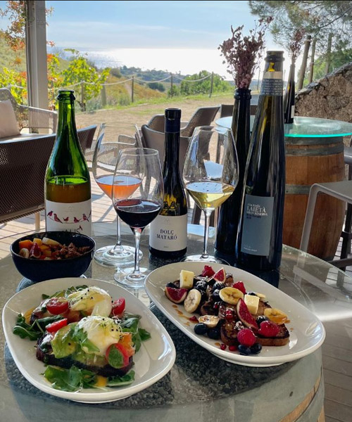
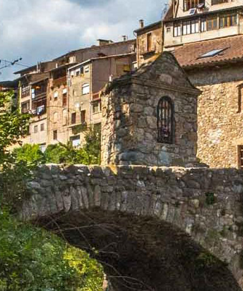
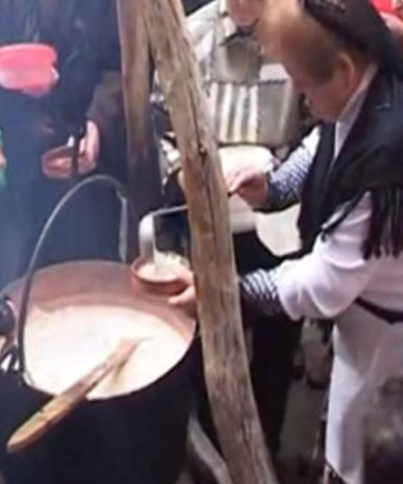
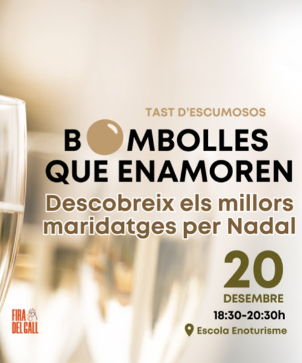
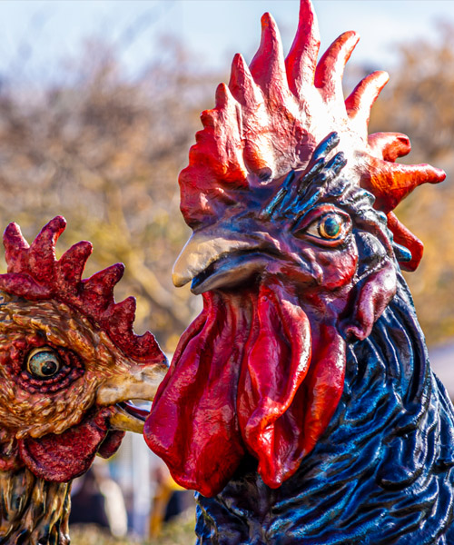

Gastronomia
Aquest Nadal, viu experiències gastronòmiques úniques amb tastos de vins, esmorzars de pagès, showcookings nadalencs i maridatges especials. Gaudeix de la millor cuina local i vins en un ambient festiu i tradicional, ideal per compartir amb amics i família

Assaborir el Nadal

Descobreix el celler on neix l'únic vi de Barcelona. A la masia de Can Calopa, a Collserola, podràs conèixer la tradició vinícola de la ciutat i el projecte d’agricultura social de L'Olivera, mentre tastes els seus vins i olis amb vistes al Tibidabo.

Esmorza a Collserola i descobreix els productes dels últims artesans de la serra de Barcelona. Visita el celler de Can Calopa, coneix el seu projecte agroecològic i gaudeix d’un esmorzar de pagès amb vins, olis i productes locals.

Gaudeix d'una experiència única amb Brunch & Wine: visita al celler i un brunch maridat amb vins i caves, tot envoltat de vinyes i el mar Mediterrani. Ideal per gaudir amb amics o família!

L'11a edició de la Ruta Gastronòmica de Cabrils, sota el lema 'Platillos que volen', compta amb la participació de restaurants com Can Rin, Il Forno di Papá, La Concòrdia, La Mossegada, L'Hort Cabrils, Hostal de la Plaça, Nou Gras i Sal i Pebre.

Aprèn a elaborar plats festius amb ingredients frescos i locals, mentre gaudeixes d’una experiència en família. Un moment ideal per compartir, aprendre i fer créixer la tradició culinària nadalenca.

La Fira de la Puríssima a Gironella és una fira d'artesania i tradició nadalenca. Podràs degustar l'escudella de blat de moro escairat, un plat típic de la comarca, i gaudir de l'exposició de pessebres. La fira té lloc al nucli antic de la vila.

Viu un showcooking especial amb el cuiner Jacint Carafi, Cintet. Aprendràs a preparar entrants i plats freds per les festes, amb productes locals. L'equip de Caram Caram presentarà la sessió, destacant la història dels productes i comerços de Sant Sadurní. La sessió inclou un tast de tres receptes maridades amb cava.

Gaudeix d’un tast de productes de proximitat al Bages, amb vins de la DO Pla de Bages i platets típics del Geoparc de la Catalunya Central, com la mousse de mató amb cansalada o les mongetes de Castellfollit amb botifarra de bolets i rocs de Sant Benet.

A la Fira del Gall de Vilafranca, l’Escola d’Enoturisme de Catalunya organitza el tast "Bombolles que enamoren", on descobriràs els millors maridatges d’escumosos per Nadal. En dues hores, aprèn a combinar escumosos amb plats tradicionals com la sopa de galets i el Gall Negre del Penedès.

Vine a descobrir l'allioli de codony, un producte únic de la cuina de muntanya! La fira ofereix activitats com un concurs d’allioli de codony, demostracions en viu, una mostra de productes locals, art i artesania, i l'esmorzar típic on podràs tastar aquesta delícia.

Submergeix-te en els misteris de la tòfona a Centelles, una vila amb un ric llegat de bruixes. Durant l’Edat Mitjana, el seu color fosc i origen subterrani li atorgaven poders màgics i malèfics. A la fira, podràs descobrir les seves propietats culinàries i conèixer les històries de pocions i ungüents elaborats amb aquest fong.

Vilafranca celebra la tradició del Gall Negre del Penedès, una raça autòctona d’aviram amb una carn excel·lent. A la fira, podràs gaudir d’un mercat d’aviram, tastar plats gastronòmics elaborats amb aquest gall i maridar-los amb vins de la DO Penedès.